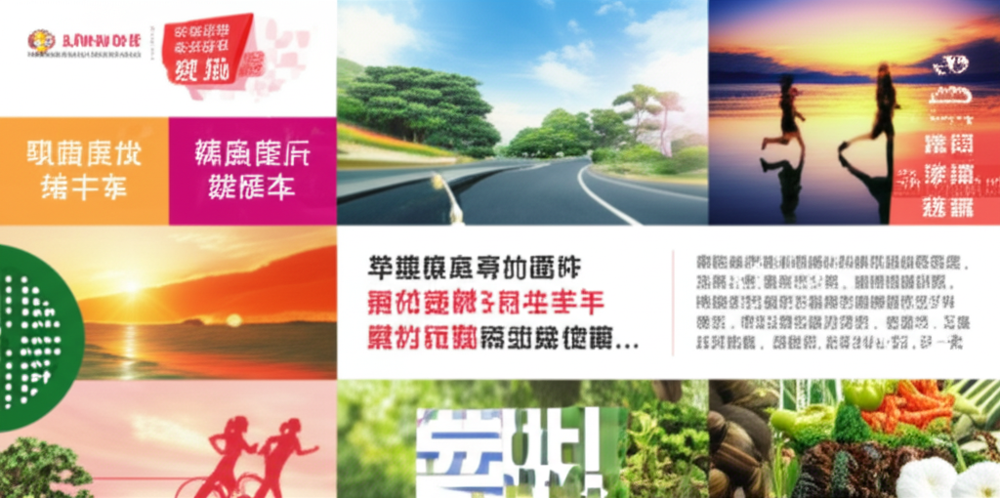

# 近期健康與運動新聞綜述
## 引言
近期，健康與運動相關的新聞持續受到關注，從飲食安全、運動方式到健康指標的解讀，都顯示了人們對於維持良好生活型態的高度重視。本文將整理近日相關新聞，涵蓋食品安全、運動建議、健康指標以及其他生活風格相關資訊，以供參考。
## 主體內容
### 第一點：食品安全與健康飲食
台灣近期出現了萊克多巴胺豬肉進口後首次驗出的案例，引發了民眾對於食品安全的擔憂。這也提醒消費者在選購肉品時需要更加謹慎，留意產地標示，並了解相關的食品安全資訊。此外，新聞中也提及了飲食對於健康的重要性，例如「超慢跑魔人血糖竟失控！醫揪『關鍵』：很多人不知道」一文，強調運動固然重要，但飲食的配合更是維持血糖穩定的關鍵。
### 第二點：運動方式與健康指標
「超慢跑」成為近期熱門的運動話題，不僅早安健康網站持續推廣，中時新聞網也報導了「超慢跑助長壽醫：1數值降死亡率飆」，指出最大攝氧量 (VO2 max) 比體重或 BMI 更能決定健康與壽命。然而，三立新聞的報導也提醒，即使是超慢跑，也需要注意運動方式與身體狀況的配合，避免過度運動導致血糖失控。此外，蔡銘禮老師的 Instagram 貼文則強調了正確的儀態對於健康的重要性，提醒人們注意頭部的位置，避免不良姿勢導致痠痛。
### 第三點：生活風格與外交
民報的評論文章提到「做『國民外交』唾手可得」，鼓勵民眾透過晨運、超慢跑等活動與外國友人交流，展現台灣的友善與活力。這也顯示了健康的生活方式不僅有益於個人，也能促進國際交流。此外，澎湖即時新聞網分享了七美的美麗粉紅海，提醒人們在注重健康的同時，也不要忘記欣賞台灣的美麗風景。
## 結論
總體而言，近期健康與運動相關的新聞涵蓋了食品安全、運動方式、健康指標以及生活風格等多個面向。這些資訊提醒我們，維持健康的生活型態需要多方面的配合，包括注意飲食安全、選擇適合自己的運動方式、重視健康指標的監測以及保持積極樂觀的心態。